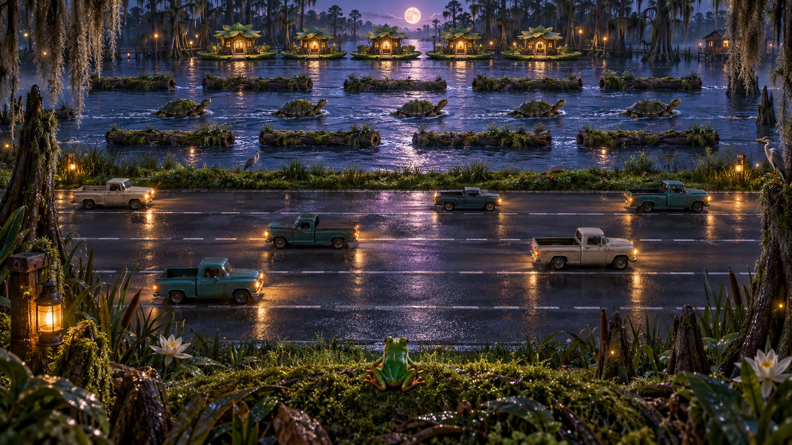
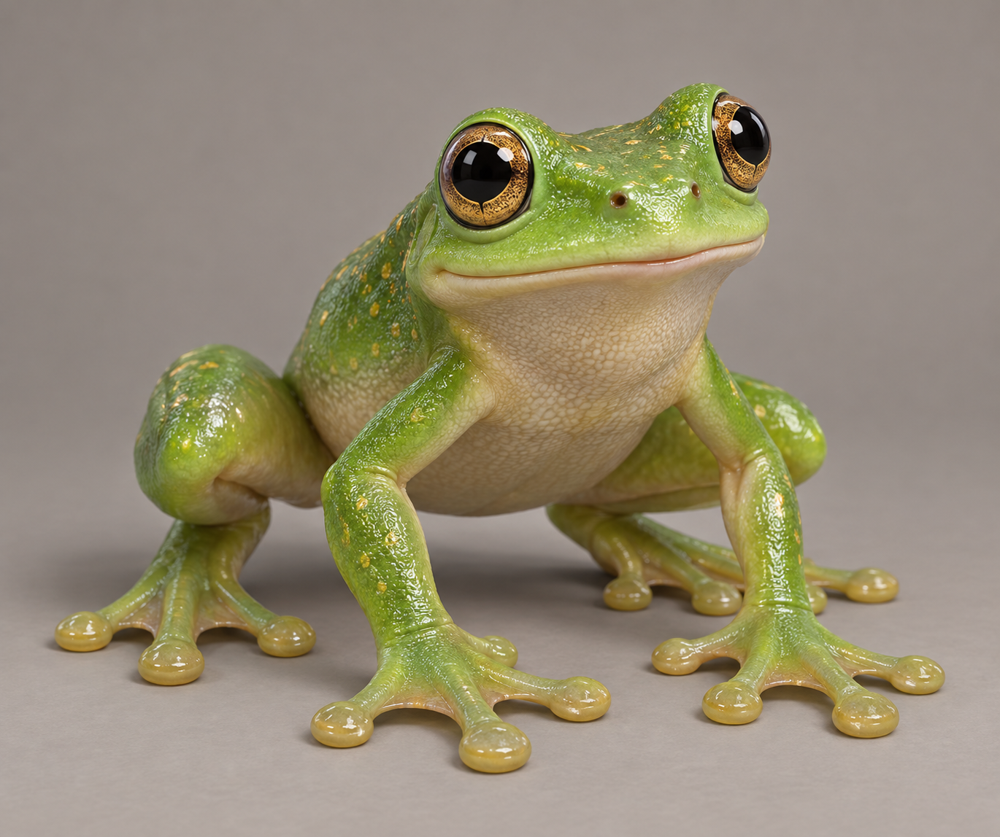
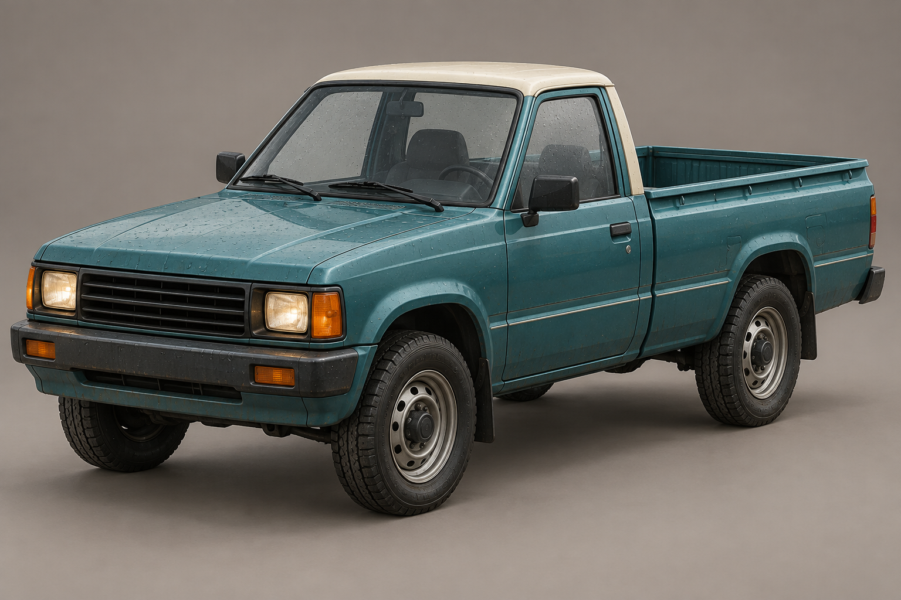
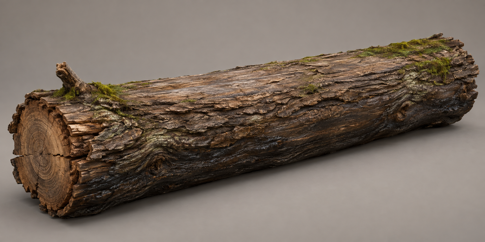
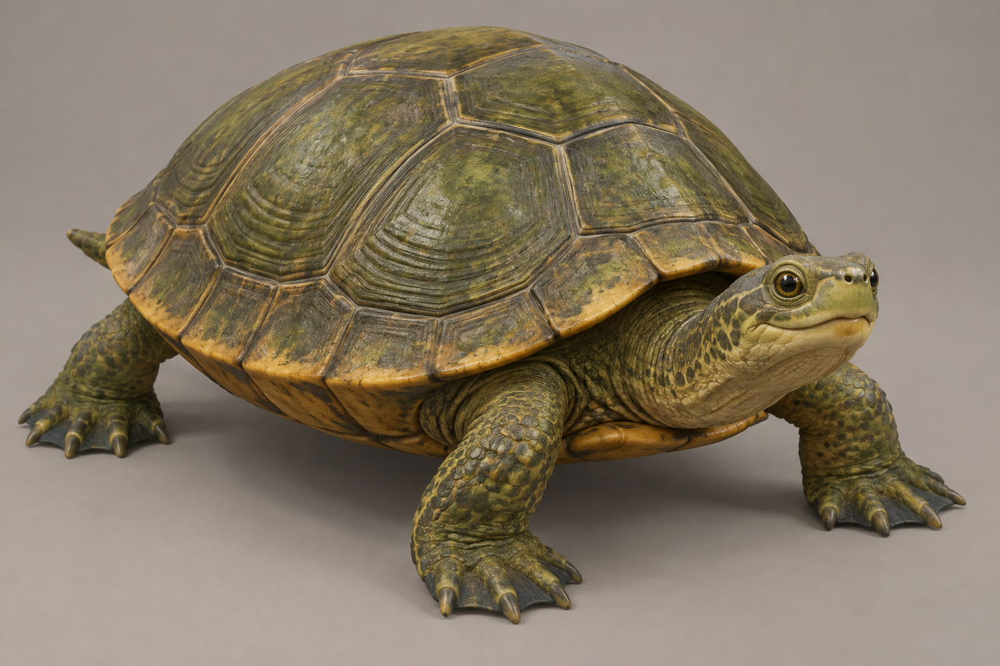
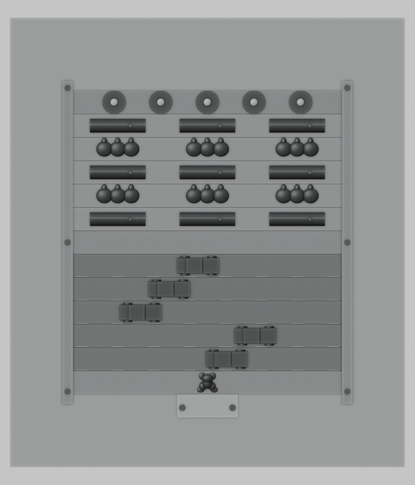
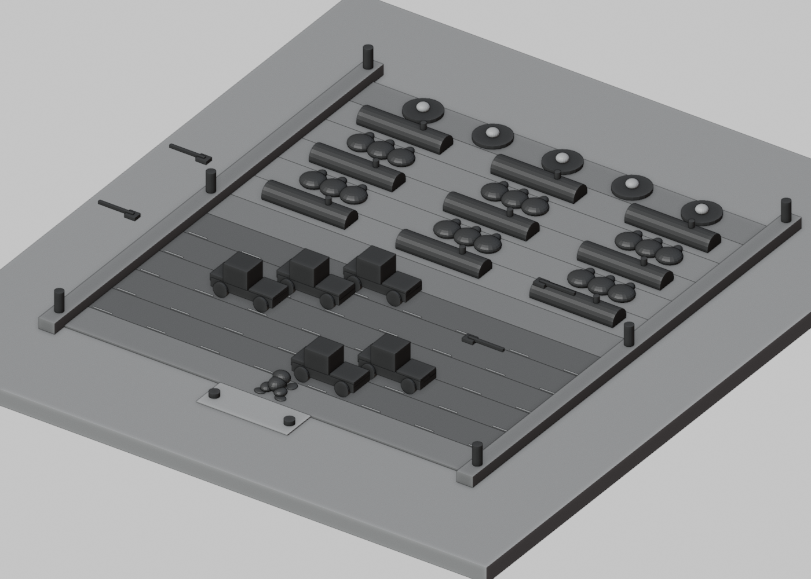
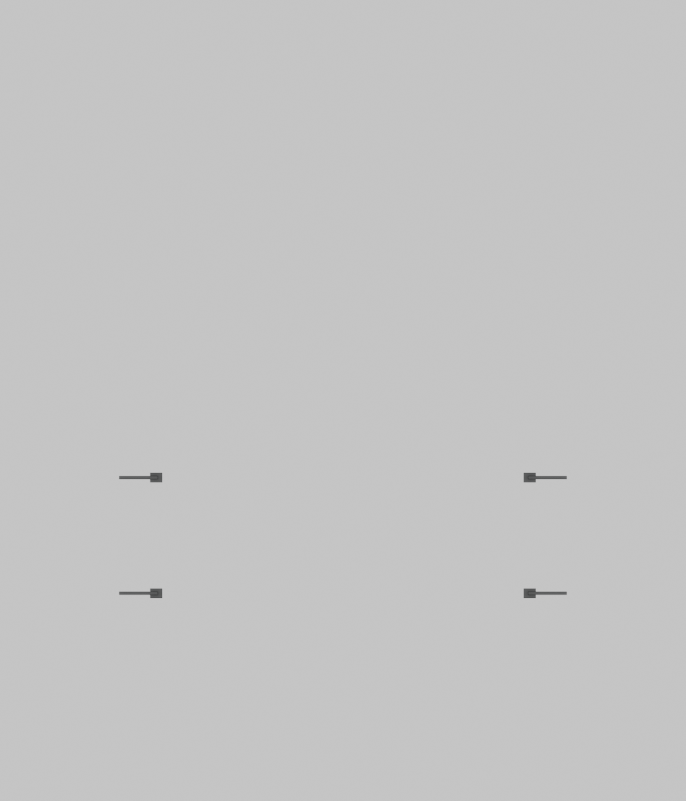
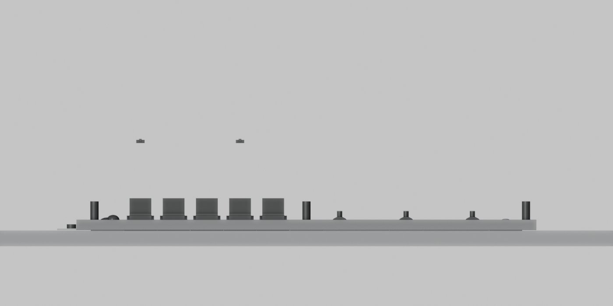

A moss-green cabinet occupies the right-hand VECTOR bay, beside the central Brickstorm machine. A legible “Play Bayou Crossing” action also appears in the arcade game selector.
A Frogger-inspired journey through rain-soaked traffic and a moonlit river. Small hops. Moving islands. Five little places to call home.

A moss-green cabinet occupies the right-hand VECTOR bay, beside the central Brickstorm machine. A legible “Play Bayou Crossing” action also appears in the arcade game selector.
Begin on a safe bank with a visible start button. Cross five traffic lanes, pause on the grassy median, then ride logs and turtles toward five glowing homes.
Fill all five homes to advance. Three rounds increase the pace. Save the score locally and return to the arcade with a lily-pad trophy after a complete run.
Planned controls: arrow keys or WASD for one deliberate hop; touch direction buttons; a debounced VR thumbstick. Desktop begins with an elevated follow view. Frog-eye view is optional on desktop and the planned VR view, with a brief comfort fade for movement. Pause and return-to-arcade actions remain visible.
These are modeling references for Blender. They are not completed meshes. Approving them selects their shapes, proportions, materials, and level of detail for production.




Actual Blender blockout geometry, rendered in grayscale to assess space and sightlines. Terrain bounds: 22 × 25 meters. Playable width: 10.4 meters. Thirteen rows at 1.3-meter spacing. Organic vegetation stays outside the playing corridor.




The crossing simulation and this Blender layout study exist. The final detailed models, second cabinet and playable connection have not yet been integrated. The intended rendering uses modeled geometry, locally stored generated textures, wet surfaces, fog, fireflies and restrained lighting.
Blender is available locally and was used for the study. Blender MCP is not exposed in this session. The Game Development Studio CLI is missing. Proposed production route: local Blender, zero paid Meshy generation. Target scene budget: 250,000 triangles; 16 MB of textures, with a reduced-detail VR profile.
Approval scope: the layout, the four isolated asset references, and the Blender-only production route. The room-building plugin requires explicit design approval before final composition. Its validator assumes a paid Meshy pipeline; no pricing, paid-credit authorization, provider task IDs or approval records have been invented.